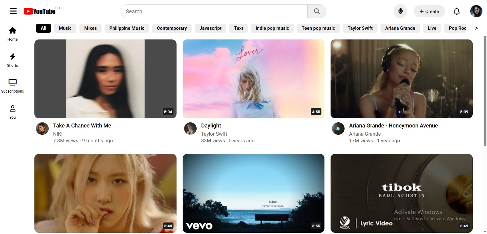
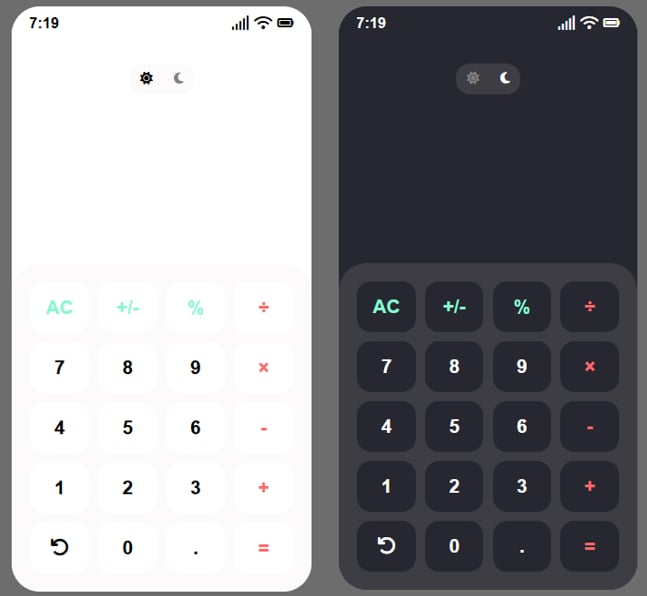
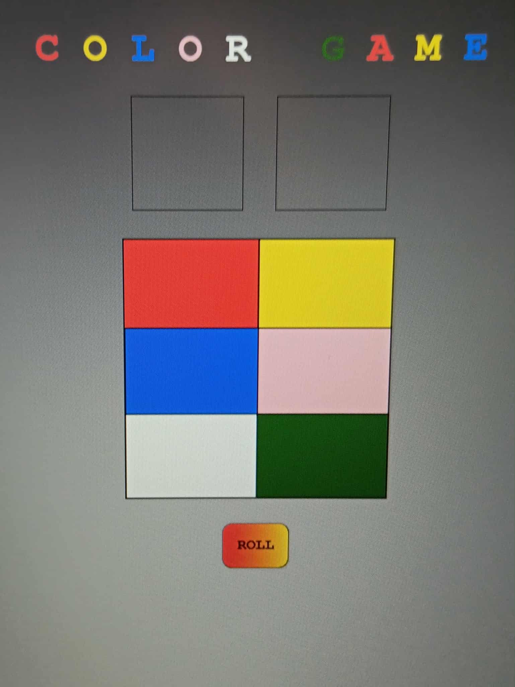

MY PROJECTS

Youtube Clone
Web Application Design
A simplified YouTube clone created to explore web design and front-end coding. This project highlights my ability to replicate the core layout and interface of a popular platform while focusing on clean structure, responsive design, and user-friendly visuals. It serves as a demonstration of my front-end development skills and attention to detail in recreating real-world applications.

Calculator
Web Application Design.
This project showcases a functional calculator with both light mode and dark mode themes. It focuses on clean design, responsive layout, and intuitive user interaction. The project highlights my ability to implement theme toggling, ensure usability across devices, and build practical applications with front-end technologies. It’s a simple yet polished tool for everyday use.

Color Game
Web Application Design
This project is a digital version of the traditional perya “Color Game,” where players bet on colors and a dice roll determines the winner. It showcases my ability to recreate real-world games with engaging visuals, interactive logic, and responsive design. The project highlights my front-end development skills in handling randomness, user interaction, and smooth game flow.